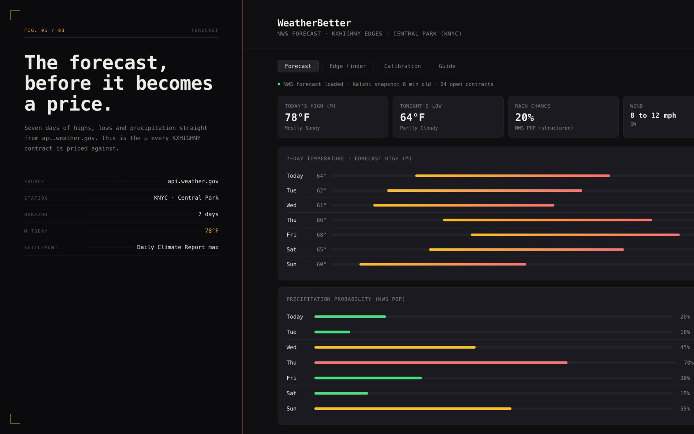
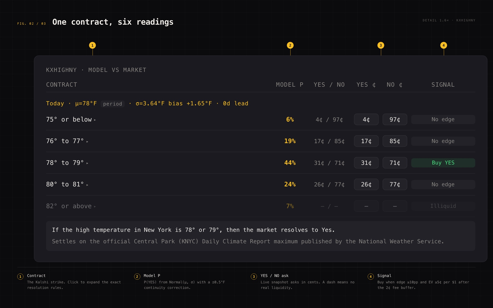
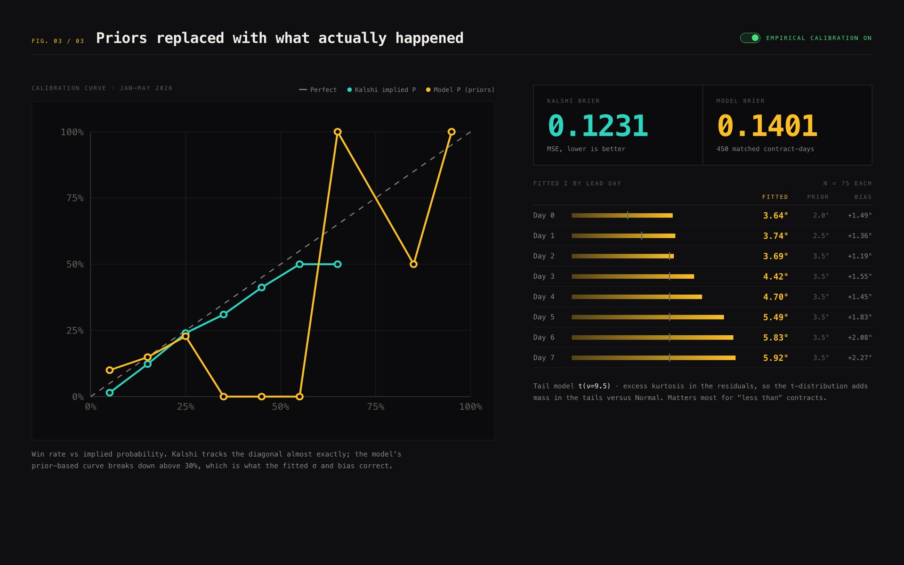

Weather Better
-
Role
Solo build
Year
2025 – present
-
Goal
Surface mispriced contracts on Kalshi's NYC high-temperature markets
Result
Live, and $400 in verified profit within three weeks
-
Stack
Vanilla JS modules, NWS API, Kalshi API, GitHub Actions, GitHub Pages
Link
Description
A static web tool that finds edges in Kalshi's KXHIGHNY temperature contracts. It pulls NWS forecast highs for Central Park, fits a Normal distribution over expected settlement values, and flags the contracts where the model's implied probability diverges from the market ask by enough to be worth acting on.
Overview
Kalshi runs daily contracts on the high temperature at NYC Central Park. The National Weather Service publishes a forecast for exactly that station, for free, with no API key. If the market is priced differently from what the forecast implies, that difference is the trade. Doing the comparison by hand across every strike, every day, is the part that does not scale.
The tool fits a Normal distribution around the forecast high, adjusted for bias and for lead-time sigma, and reads off the probability of each strike settling YES. That number goes next to the live Kalshi ask. When the two disagree by seven percentage points or more, and the estimated EV clears five cents on the dollar after fees, the row is flagged as a buy. There is no backend: the whole thing is static files on GitHub Pages, and a GitHub Actions cron writes a fresh Kalshi snapshot every fifteen minutes because browser CORS blocks calling the exchange directly.
- Seven-day forecast tab pulling live NWS data, no API key required
- Probabilistic model fitting Normal(forecast high plus bias, lead-time sigma) per contract
- Edge detection flagging buy YES or NO when model and market ask differ by 7 points or more and estimated EV clears 5 cents per dollar after fees
- Kalshi snapshot refreshed every 15 minutes by a GitHub Actions cron
- Known limitations documented in the model rather than papered over: flat sigma at long leads, unquantified settlement bias, no cross-contract joint distribution

Role & process
Solo. The model, the frontend, the data pipeline, and the automation.
- Designed the probabilistic model and the buy rule, including the edge and EV thresholds that decide what counts as a signal
- Built the frontend as vanilla ES modules with no build step, so the whole tool is static files served from GitHub Pages
- Set up the GitHub Actions workflow that refreshes the Kalshi snapshot on a cron, working around the CORS wall rather than standing up a backend for it
- Documented the model's failure modes on the page instead of hiding them. The tool is for my own money, and overconfidence is the actual risk

Outcome
Live, refreshing every fifteen minutes, and $400 up in verified profit over its first three weeks. It was built against three goals:
- Identify mispriced temperature contracts faster than doing it by hand
- Keep the stack as simple as it can be: no backend, no build step
- Make the model's assumptions and limitations legible